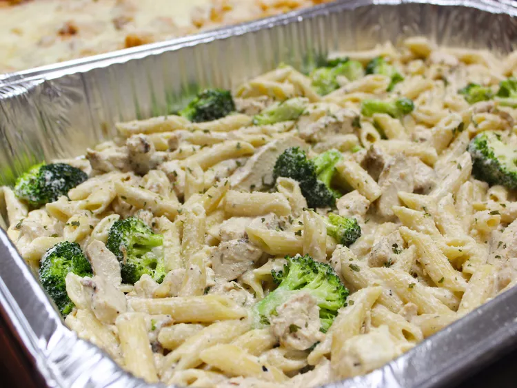

Baked Chicken Alfredo

Description
This recipe is quick and easy and any novice cook can do it. It was made for the little ones who always wanted to
order out at Pizza Hut® or Olive Garden®. Serve with additional Parmesan cheese if desired. This recipe can also
be eaten without being baked but the kids love that it resembles baked casseroles found in restaurants.
Ingredients
- 1 (16 ounce) package penne pasta
- ½ cup butter
- 2 teaspoons minced garlic
- 1 (8 ounce) package cream cheese, softened
- 2 cups milk
- 6 ounces grated Parmesan cheese, divided
- 2 teaspoons dried parsley
- 1 teaspoon Italian seasoning
- 1 teaspoon salt, divided
- ½ teaspoon ground black pepper
- 1 teaspoon olive oil
- 2 chicken breasts, patted dry
- ½ teaspoon garlic powder
Steps
- Bring a large pot of lightly salted water to a boil; add penne and cook, stirring occasionally, until tender
yet firm to the bite, about 11 minutes. Drain.
- Melt butter in a large saucepan over medium-high heat. Add minced garlic; saute until golden, about 30
seconds. Stir in cream cheese until smooth. Add milk; stir until there are no lumps. Lower heat to medium.
Add 3/4 of the Parmesan cheese, parsley, Italian seasoning, 1/2 teaspoon salt, and black pepper. Simmer,
stirring occasionally, until sauce is smooth, about 5 minutes. Remove from heat.
- Heat olive oil in a large skillet over low heat. Season chicken with 1/2 teaspoon salt and garlic powder on
both sides. Cook chicken breasts until no longer pink in the center and an instant-read thermometer inserted
into the center reads at least 165 degrees F (74 degrees C), about 6 minutes per side. Cut chicken into
1/2-inch cubes.
- Preheat oven to 375 degrees F (190 degrees C).
- Butter bottom and sides of a 9x13-inch casserole dish. Cover bottom with a layer of pasta. Place half of the
chicken cubes on top. Pour 1/2 of the sauce over the chicken. Repeat layering pasta, chicken, and sauce.
Sprinkle top with remaining Parmesan cheese. Cover with aluminum foil.
- Bake in the preheated oven until sauce is bubbly, about 15 minutes. Remove aluminum foil and bake until
cheese is golden, about 5 minutes more.